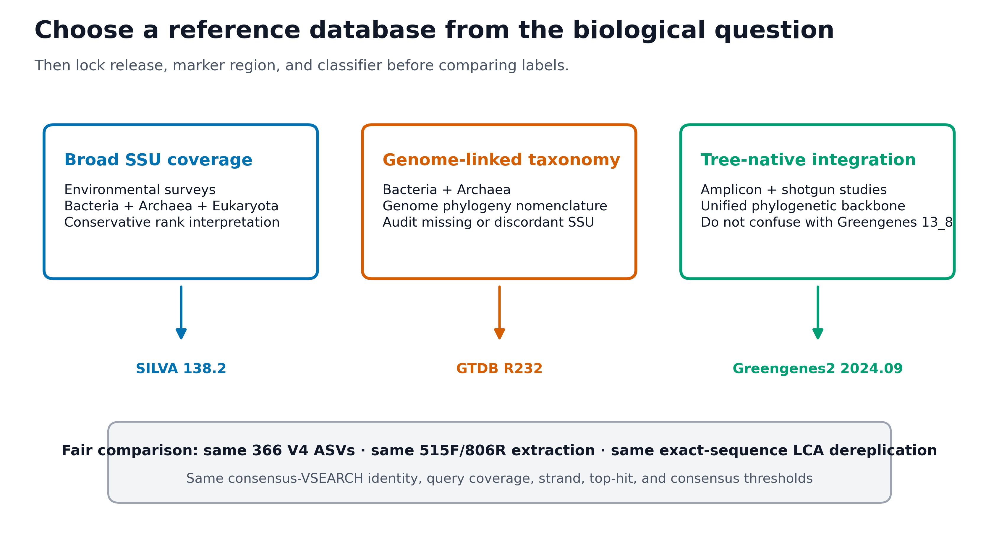
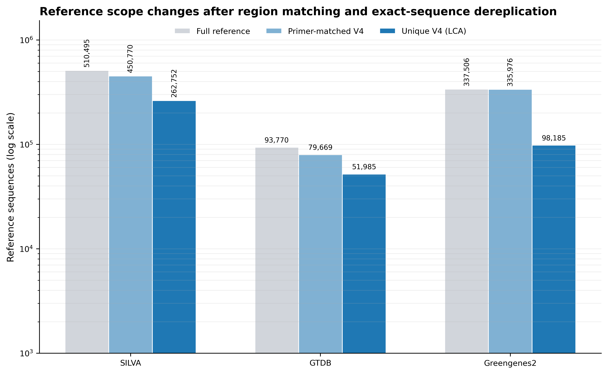
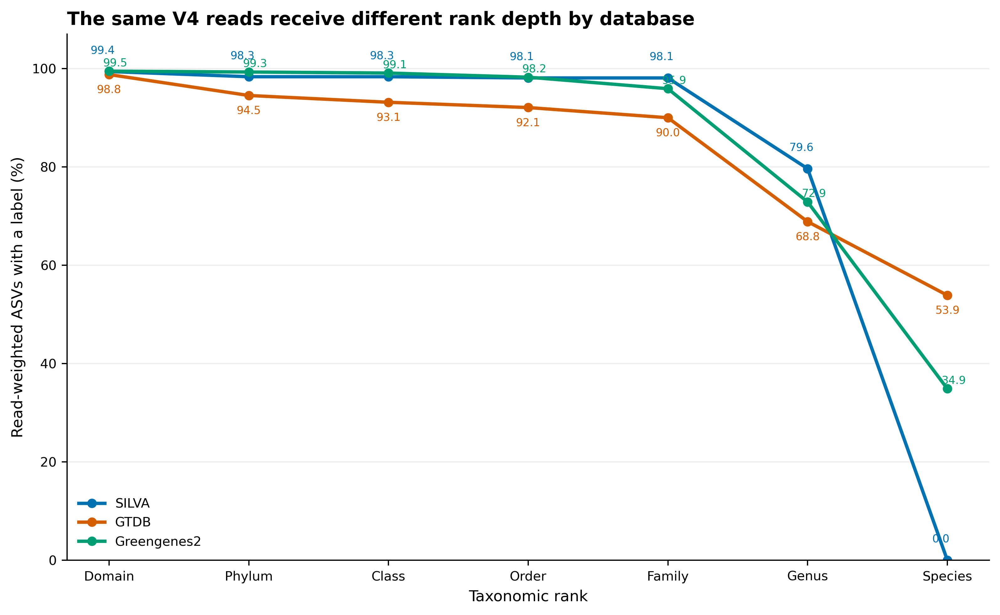
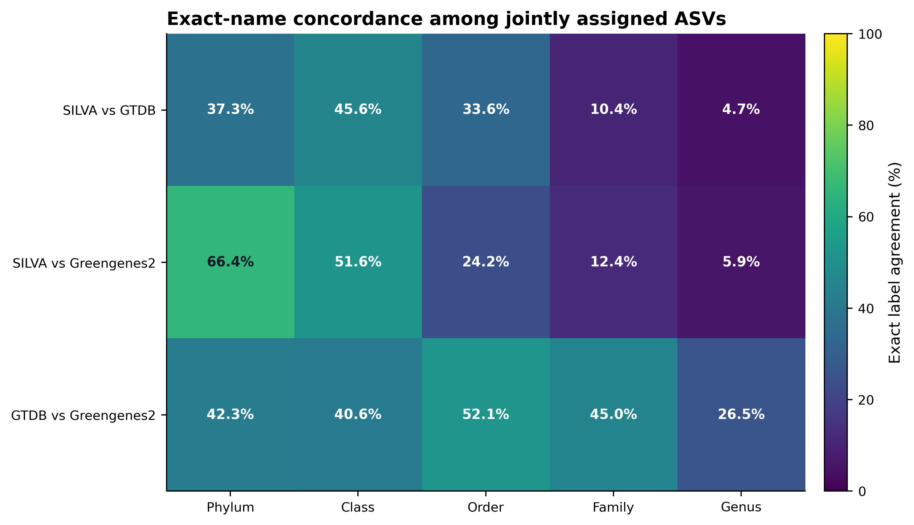

mamba env create -f env/qiime2.yml
conda activate microbiome-qiime2-2026.4
qiime info
qiime feature-classifier classify-consensus-vsearch --help
qiime rescript extract-seq-segments --help
qiime rescript dereplicate --help
vsearch --version
python -c "import sklearn; print(sklearn.__version__)"物种注释 + 数据库选择（SILVA/GTDB/Greengenes2）
分类结果首先取决于参考数据库
同一条 V4 序列在三个数据库里得到不同名称，可能是参考序列不同、命名体系不同，也可能是可报告的分类层级不同。先确定需要区分哪些生物、哪些层级，再选择覆盖相应范围的参考库；不能把“注释得更多”直接等同于“注释得更准”。
本例中 SILVA 的 species 覆盖为零，是因为输入分类表只保留到 genus；这不是物种全部不存在，也不是算法全部失败。两个库的一致率还只在双方都给出标签的 ASV 中计算：较难分类的序列被排除后，一致率可能变高。因此应把整体覆盖率、双方可比较的数量和条件一致率一起读，而不是只取最高的百分比。没有已知真值的样本不能据此给数据库排准确率名次。




重要把覆盖率、命名一致率与准确率分开
数据库不是中性的物种字典。必须同时写清 release、reference subset、扩增区域、taxonomy schema、分类算法和参数；species 字符串只是数据库条件下的标签，不是 V4 已证明物种或菌株。
本次固定环境与真实结果为：
Environment
QIIME 2 / q2cli: 2026.4.0
q2-feature-classifier: 2026.4.0
RESCRIPt: 2026.4.0
VSEARCH: 2.30.4
scikit-learn: 1.7.1
Query
Real V4 ASVs: 366
Non-chimeric reads: 5,213
ASV length: 252–303 nt
Median ASV length: 253 nt
Region reference contract
Primer pair: 515F / 806R
Forward: GTGYCAGCMGCCGCGGTAA
Reverse: GGACTACNVGGGTWTCTAAT
Primer identity: 0.80
Amplicon length: 200–400 nt
Orientation: both
Dereplication: exact sequence + LCA
Reference scope
full primer-matched V4 unique V4 LCA
SILVA 138.2 510,495 450,770 262,752
GTDB R11-RS232 93,770 79,669 51,985
Greengenes2 2024.09 337,506 335,976 98,185
Same classifier contract
maxaccepts: 50
maxrejects: all
identity / query coverage: 0.80 / 0.80
strand: both
top hits only / maxhits: true / all
minimum consensus: 0.51
output no hits: true
Assignments
SILVA: 358 / 366 ASVs; 5,181 / 5,213 reads
GTDB: 356 / 366 ASVs; 5,149 / 5,213 reads
Greengenes2: 362 / 366 ASVs; 5,185 / 5,213 reads
Validation: 91 / 91 PASS这 366 条 ASV 来自固定 commit f282ad2bafb3ca90190ec87290066ee1985df655 的真实 nf-core/test-datasets V4 MiSeq 数据。原始 10,000 对 reads 经 anchored、IUPAC-aware 515F/806R 去引物和 DADA2 后保留 5,213 对非嵌合 reads。这里使用其代表序列和真实频数做数据库合同验证；原数据没有独立的生态研究分组，因此不据此比较环境或处理效应。
开始前：数据与运行环境
在 Linux 或 WSL2 的项目文件夹中运行下面的下载命令。下载后保留这里的相对目录，后续命令使用同一组文件。
base_url="https://raw.githubusercontent.com/petemeng/microbiome-best-practices/3cb6a817e0c73ab7ecbec1cedc1ad80cbb9ecfaa"
for file in \
env/qiime2.yml \
scripts/prepare_taxonomy_database_assets.py \
scripts/validate_taxonomy_databases.py
do
mkdir -p "$(dirname "$file")"
curl --fail --location --retry 3 "$base_url/$file" --output "$file" || break
done本次分析的数据、环境与图形设置
安装固定 QIIME 2 环境
项目提供已经验证的 env/qiime2.yml：
若用户目录缓存不可写，把缓存放在当前项目：
export XDG_CACHE_HOME="${PWD}/.cache/xdg"
export NUMBA_CACHE_DIR="${PWD}/.cache/numba"
export MPLCONFIGDIR="${PWD}/.cache/matplotlib"
mkdir -p \
"${XDG_CACHE_HOME}" \
"${NUMBA_CACHE_DIR}" \
"${MPLCONFIGDIR}"检查本页的小型固定资产
DATA="data/small/taxonomy-databases"
ls -lh "${DATA}"
gzip -t "${DATA}/query-v4-asvs.fasta.gz"
gzip -t "${DATA}/silva-138.2-v4.fasta.gz"
gzip -t "${DATA}/silva-138.2-v4-taxonomy.tsv.gz"
gzip -t "${DATA}/gtdb-r232-v4.fasta.gz"
gzip -t "${DATA}/gtdb-r232-v4-taxonomy.tsv.gz"
gzip -t "${DATA}/greengenes2-2024.09-v4.fasta.gz"
gzip -t "${DATA}/greengenes2-2024.09-v4-taxonomy.tsv.gz"固定 SHA-256：
query-v4-asvs.fasta.gz
fa71915be8007d36ec70f85d28401f5a94d0d33eca323782cc937cfc4bcf1af4
query-v4-asv-abundance.tsv
a80e3b94d8632c48fb6c01e788e842c022c3b1ee64b79dc94456618328895e6e
silva-138.2-v4.fasta.gz
3a251d263bd4e12c96023c84b3f2e255b8bcb0d5865dc6f299f9918e6be3a808
silva-138.2-v4-taxonomy.tsv.gz
f49320aaa32aa70af5c5a48649786e3bb4177868da5da4d2143d0a54c5fa47b0
gtdb-r232-v4.fasta.gz
3c4234b4defcdc3d8c3b4d1e8956b12288bccd853a4b7f3a3003847c32e6e250
gtdb-r232-v4-taxonomy.tsv.gz
a23d0d4f62183e949c868c3f25aace3acdebb9362ae0bb1d0e9fe81e74c43fe0
greengenes2-2024.09-v4.fasta.gz
330fe7f400c84c1e454ca9193bcc49f078b01c7880a8bfb99cbe4c0c3c1c14d2
greengenes2-2024.09-v4-taxonomy.tsv.gz
9594e9ae78a568672891693207fd4dcc31f8eada83b931031642fafcff2684bd先看结构：
gzip -cd "${DATA}/query-v4-asvs.fasta.gz" | head -n 6
head -n 8 "${DATA}/query-v4-asv-abundance.tsv"
gzip -cd "${DATA}/silva-138.2-v4-taxonomy.tsv.gz" | head -n 6
gzip -cd "${DATA}/gtdb-r232-v4-taxonomy.tsv.gz" | head -n 6
gzip -cd "${DATA}/greengenes2-2024.09-v4-taxonomy.tsv.gz" | head -n 6最小数据结构是：
query FASTA
>ASV_ID
ACGT...
taxonomy TSV
Feature ID<TAB>Taxon
reference_id<TAB>d__...; p__...; ...; s__...
abundance TSV
Feature ID<TAB>Frequency<TAB>No. of Samples Observed In需要从完整官方发布重建时
完整来源分别为：
- SILVA 138.2
SILVA_138.2_SSURef_NR99_tax_silva.fasta.gz，MD5c3b7638cab8bf2fe1e5cad01ce406a53； - GTDB R232
ar53_ssu_reps_r232.fna.gz、bac120_ssu_reps_r232.fna.gz及两份 taxonomy，四个官方 MD5 已写入准备脚本； - Greengenes2 2024.09
2024.09.backbone.full-length.fna.qza与2024.09.backbone.tax.qza，SHA-256 分别为527e7a7d...3989与6cb6f476...1fe。
把完整文件放入 ignored scratch data/raw/taxonomy-databases/，再运行：
python3 scripts/prepare_taxonomy_database_assets.py \
--project-root . \
--raw-dir data/raw/taxonomy-databases \
--work-dir work/14-reference-preparation \
--output-dir data/small/taxonomy-databases \
--qiime-env microbiome-qiime2-2026.4 \
--threads 4脚本会验证官方 checksum，maximum-validate Greengenes2 QZA，审计完整 source count，用同一 primer/length/orientation 提取 V4，再做 exact-sequence LCA 去冗余。SILVA 原始 description 先通过 RESCRIPt 固定为 domain–genus 六层并启用 rank propagation；原 description 中的 species 文本不会被冒充成短 V4 的可靠 species rank。
GTDB R232 release notes 已把 16S 识别改为贴近 Prokka 的 barnap 并使用 396 bp minimum；发布目录内旧通用 METHODS/FILE_DESCRIPTIONS 仍含 nhmmer/200 bp 文本。应分开记录两套文档，并以实际 FASTA 的 397–1,919 bp 长度审计为准。
安装 R 作图依赖并内联出版函数
install.packages(
c("ggplot2", "dplyr", "readr", "tidyr", "stringr", "scales"),
repos = "https://cloud.r-project.org"
)library(ggplot2)
library(dplyr)
library(readr)
library(tidyr)
library(stringr)
library(scales)
set.seed(20260720)
pal_pub <- c(
"#0072B2", "#D55E00", "#009E73", "#CC79A7",
"#E69F00", "#56B4E9", "#F0E442", "#999999"
)
scale_color_pub <- function(...) {
ggplot2::scale_color_manual(values = pal_pub, ...)
}
scale_fill_pub <- function(...) {
ggplot2::scale_fill_manual(values = pal_pub, ...)
}
theme_pub <- function(base_size = 12) {
ggplot2::theme_bw(base_size = base_size, base_family = "sans") +
ggplot2::theme(
panel.grid.major.x = ggplot2::element_blank(),
panel.grid.minor = ggplot2::element_blank(),
axis.text = ggplot2::element_text(color = "black"),
axis.ticks = ggplot2::element_line(
color = "black",
linewidth = 0.3
),
plot.title = ggplot2::element_text(
face = "bold",
color = "#111827"
),
plot.subtitle = ggplot2::element_text(color = "#4B5563"),
legend.key = ggplot2::element_blank(),
legend.background = ggplot2::element_rect(
fill = scales::alpha("white", 0.85),
color = NA
)
)
}
save_pub <- function(
plot,
file_base,
width = 170,
height = 105,
units = "mm",
dpi = 350
) {
dir.create(dirname(file_base), recursive = TRUE, showWarnings = FALSE)
ggplot2::ggsave(
paste0(file_base, ".pdf"),
plot,
width = width,
height = height,
units = units,
device = grDevices::cairo_pdf
)
ggplot2::ggsave(
paste0(file_base, ".png"),
plot,
width = width,
height = height,
units = units,
dpi = dpi,
bg = "white"
)
ggplot2::ggsave(
paste0(file_base, ".tiff"),
plot,
width = width,
height = height,
units = units,
dpi = dpi,
compression = "lzw",
bg = "white"
)
}分类结果为什么取决于数据库和分类器
三个数据库回答的问题不同
| Database | 核心证据来源 | 更适合优先考虑的场景 | 必须说明的边界 |
|---|---|---|---|
| SILVA 138.2 SSURef NR99 | 整理后的 SSU rRNA 序列与 SILVA taxonomy | 广泛环境调查、需要 Bacteria/Archaea 并保留更广 SSU scope | taxonomy 与 genome phylogeny 不必完全一致；本次 fixed-rank 合同止于 genus |
| GTDB R11-RS232 | 代表基因组系统发育与 genome taxonomy，从代表基因组提取 SSU | 希望扩增子名称与 GTDB genome/MAG 工作尽量同源 | 并非每个代表基因组都有完整、可靠且与 genome tree 一致的 16S；这里是 93,770 条 species-representative SSU，不是 901,341 个基因组 |
| Greengenes2 2024.09 | Web of Life backbone、全长 16S 与大规模 V4 placement | 扩增子与 shotgun、Qiita 或 tree-native 分析需要统一参考框架 | 不是旧 Greengenes 13_8；2024.09 taxonomy 基于 GTDB R220 与 LTP 08/2023，不是本页另行比较的 GTDB R232 |
没有一个数据库对所有问题都“最好”。选择顺序应是：
biological question
→ marker and primer region
→ target taxon scope
→ nomenclature / cross-study compatibility
→ database release and reference subset
→ classifier and parameters
→ sensitivity analysis if conclusions depend on labels“完整发布”与“可用于本实验的参考”是两层对象
本次先审计完整官方资产，再从每个资产提取同一区域：
full release
→ 515F/806R primer matching
→ 200–400 nt V4 amplicons
→ exact-sequence dereplication
→ least-common-ancestor taxonomy
→ QIIME 2 FeatureData[Sequence] + FeatureData[Taxonomy]这一步很重要。若把 SILVA 的全长 SSU、GTDB 的区域参考和一个预训练 Greengenes2 classifier 直接并排，观察到的差异会同时混合：
- reference scope；
- primer-region availability；
- 重复序列权重；
- taxonomy schema；
- classification algorithm；
- classifier training version。
那样无法把差异归因到数据库。
为什么必须按 primer pair 提取同一区域
短扩增子只包含全长 16S 的一部分。全长参考中某些记录：
- 缺少目标区域；
- 在 primer 位点有 mismatch；
- 方向相反；
- 提取后超出合理长度；
- 不同全长序列在 V4 上完全相同。
本次三个数据库统一使用：
515F: GTGYCAGCMGCCGCGGTAA
806R: GGACTACNVGGGTWTCTAAT
primer identity: 0.80
length: 200–400 nt
orientation: both因此图 图 14.2 中的规模差异是可审计的 reference-scope 结果，不是把三个不等价对象硬放在一起。
exact-sequence LCA 去冗余解决什么
提取后，多个全长参考可能产生完全相同的 V4 序列。如果保留所有副本，某个重复较多的 lineage 会在 consensus 中获得额外权重。本次用 RESCRIPt 对 identity = 1.0 的区域序列去冗余，并在标签冲突时保留 least common ancestor（LCA）：
same V4 sequence
label A: d__; p__; c__; o__; f__; g__A
label B: d__; p__; c__; o__; f__; g__B
LCA result
d__; p__; c__; o__; f__; g__LCA 丢掉的是短区域无法区分的过深标签，不是生物信息“被浪费”。如果完全相同的 V4 序列对应多个 genus，短 V4 本来就不能凭序列本身决定其中一个。
分类器也必须固定
三次分类均使用：
q2-feature-classifier classify-consensus-vsearch
maxaccepts = 50
maxrejects = all
identity = 0.80
query coverage = 0.80
strand = both
top hits only = true
maxhits = all
minimum consensus = 0.51top-hits-only 先保留具有最高 percent identity 的 hits，再计算 taxonomy consensus。minimum consensus = 0.51 表示某层至少有 51% 的纳入 hits 支持同一标签，否则在该层回退。
注记这不是全数据库 exhaustive search
QIIME 2 文档说明，只有 maxaccepts = all 且 maxrejects = all 才遍历完整数据库。本次固定 maxaccepts = 50，是相同参数下的有界比较，避免三个大库的重复执行失去可操作性。若关键结论依赖少数边界 ASV，应把 maxaccepts = all 作为敏感性分析，并在 Methods 中如实报告运行合同。
同时报告 ASV 比例和 read-weighted 比例
ASV coverage 回答“有多少种不同序列拿到标签”；read-weighted coverage 回答“样本中有多少 reads 属于这些序列”。两者分母不同：
\[ \text{ASV coverage}_r = \frac{\#\{i:\text{ASV }i\text{ has a label at rank }r\}} {\#\{\text{all query ASVs}\}} \]
\[ \text{Read-weighted coverage}_r = \frac{\sum_i n_i I(i\text{ has a label at rank }r)} {\sum_i n_i} \]
本例中 SILVA 注释 358/366 个 ASV，但覆盖 5,181/5,213 条 reads。说明未注释 ASV 多为低频序列。若只报告 ASV 比例，会夸大它们在总 reads 中的影响；若只报告 reads，又会隐藏稀有 ASV 的 reference gap。
出现物种名称不代表已达到物种分辨率
本例 read-weighted species label coverage 为：
| Database | Reads with a species string |
|---|---|
| SILVA | 0.0% |
| GTDB | 53.9% |
| Greengenes2 | 34.9% |
这不表示 GTDB 已“鉴定出 53.9% 的真实物种”。原因包括：
- 253 nt 左右的 V4 片段可能由多个 species 共享；
- GTDB 的
s__来自代表基因组 taxonomy； - exact V4 序列与 species 名之间可能是一对多；
- 16S 多拷贝、数据库误注释和命名更新仍会影响标签；
- 菌株级证据通常需要更长序列、全长 16S、培养、基因组或其他正交验证。
因此正文可写“assigned a database species label”，不应写“species confirmed”。
脱靶与 Unassigned 不能在分类前消失
本次保留全部分类结果后得到：
| Database | Bacteria | Archaea | Chloroplast/plastid | Mitochondria | Unassigned |
|---|---|---|---|---|---|
| SILVA | 279 ASVs / 3,983 reads | 75 / 1,181 | 1 / 4 | 3 / 13 | 8 / 32 |
| GTDB | 281 / 3,973 | 75 / 1,176 | 0 / 0 | 0 / 0 | 10 / 64 |
| Greengenes2 | 301 / 4,072 | 59 / 1,108 | 0 / 0 | 2 / 5 | 4 / 28 |
GTDB 没有给出 organelle 标签，不等于实验中不存在 organelle reads；它也可能反映 reference scope。过滤应发生在看到结果之后，并保留每个样本的过滤账本：
all classified features
→ report Unassigned
→ report chloroplast / plastid
→ report mitochondria
→ apply preregistered exclusion rule
→ export filtered otutab + taxonomy + metadataexact-name agreement 不是准确率
在双方都有标签的 ASV 中，严格名称一致率如下：
| Pair | Phylum | Class | Order | Family | Genus |
|---|---|---|---|---|---|
| SILVA vs GTDB | 37.3% | 45.6% | 33.6% | 10.4% | 4.7% |
| SILVA vs Greengenes2 | 66.4% | 51.6% | 24.2% | 12.4% | 5.9% |
| GTDB vs Greengenes2 | 42.3% | 40.6% | 52.1% | 45.0% | 26.5% |
这是一个刻意严格的字符串比较。它会把下列情况都记为不一致：
- 同一 lineage 的新旧名称；
- GTDB 的拆分后缀或 placeholder；
- 不同 rank propagation；
- 一方回退到较浅 LCA；
- 真正的 reference/hit 差异。
因此它适合证明“名称依赖数据库”，不适合宣布某个库更准确。若需要判断生物对应关系，应增加 synonym mapping、NCBI/GTDB crosswalk、系统发育位置和 mock-community truth。
预训练分类器还需要匹配 scikit-learn 版本
Naive Bayes classifier QZA 内含训练时的 scikit-learn 对象。旧 classifier 即使数据库名称正确，也可能因为训练版本与当前 scikit-learn 1.7.1 不兼容而无法安全加载。QIIME 2 Library 也把 classifier 与特定 QIIME/scikit-learn 组合绑定。
本次刻意使用 sequence-search classifier，不加载旧 pickle。需要速度更快的 region-specific Naive Bayes 时，应在当前环境中从已锁定的区域参考重新训练，并记录：
- reference sequence/taxonomy SHA-256；
- primer-region extraction；
- fit-classifier 版本；
- scikit-learn 版本；
- cross-validation 或 mock-community evaluation。
准备参考库并比较分类注释
建立工作目录并导入 query ASV
set -euo pipefail
DATA="data/small/taxonomy-databases"
WORK="work/14-taxonomy-databases"
OUT="results/14-taxonomy-databases"
mkdir -p "${WORK}" "${OUT}"
gzip -cd "${DATA}/query-v4-asvs.fasta.gz" \
> "${WORK}/query-v4-asvs.fasta"
qiime tools import \
--input-path "${WORK}/query-v4-asvs.fasta" \
--output-path "${WORK}/query-v4-asvs.qza" \
--type 'FeatureData[Sequence]' \
--input-format DNAFASTAFormat
qiime tools validate \
"${WORK}/query-v4-asvs.qza" \
--level max这一步直接从独立打包的真实代表序列开始，不要求存在某个隐含的 ps.rds。你自己的数据需把 DADA2/QIIME 2 导出的 rep-seqs.qza 放到同一位置；ASV table 与 metadata 在注释完成后按 ID 对齐。
导入三套区域参考
prepare_reference () {
key="$1"
fasta_gz="$2"
taxonomy_gz="$3"
mkdir -p "${WORK}/${key}"
gzip -cd "${fasta_gz}" > "${WORK}/${key}/reference.fasta"
gzip -cd "${taxonomy_gz}" > "${WORK}/${key}/taxonomy.tsv"
qiime tools import \
--input-path "${WORK}/${key}/reference.fasta" \
--output-path "${WORK}/${key}/reference.qza" \
--type 'FeatureData[Sequence]' \
--input-format DNAFASTAFormat
qiime tools import \
--input-path "${WORK}/${key}/taxonomy.tsv" \
--output-path "${WORK}/${key}/taxonomy.qza" \
--type 'FeatureData[Taxonomy]' \
--input-format TSVTaxonomyFormat
qiime tools validate "${WORK}/${key}/reference.qza" --level max
qiime tools validate "${WORK}/${key}/taxonomy.qza" --level max
}
prepare_reference \
silva \
"${DATA}/silva-138.2-v4.fasta.gz" \
"${DATA}/silva-138.2-v4-taxonomy.tsv.gz"
prepare_reference \
gtdb \
"${DATA}/gtdb-r232-v4.fasta.gz" \
"${DATA}/gtdb-r232-v4-taxonomy.tsv.gz"
prepare_reference \
greengenes2 \
"${DATA}/greengenes2-2024.09-v4.fasta.gz" \
"${DATA}/greengenes2-2024.09-v4-taxonomy.tsv.gz"用同一套 consensus-VSEARCH 参数分类
classify_database () {
key="$1"
qiime feature-classifier classify-consensus-vsearch \
--i-query "${WORK}/query-v4-asvs.qza" \
--i-reference-reads "${WORK}/${key}/reference.qza" \
--i-reference-taxonomy "${WORK}/${key}/taxonomy.qza" \
--p-maxaccepts 50 \
--p-maxrejects all \
--p-perc-identity 0.8 \
--p-query-cov 0.8 \
--p-strand both \
--p-top-hits-only \
--p-maxhits all \
--p-output-no-hits \
--p-threads 4 \
--p-min-consensus 0.51 \
--p-unassignable-label Unassigned \
--o-classification "${OUT}/${key}-taxonomy.qza" \
--o-search-results "${OUT}/${key}-search-results.qza" \
--no-recycle \
--verbose
qiime tools validate \
"${OUT}/${key}-taxonomy.qza" \
--level max
qiime tools validate \
"${OUT}/${key}-search-results.qza" \
--level max
}
classify_database silva
classify_database gtdb
classify_database greengenes2--p-output-no-hits 让 366 个 query 都保留在 taxonomy 输出中；没有合格 hit 的 ASV 写为 Unassigned，不会在导出时悄悄消失。
导出分类注释与序列搜索结果
for key in silva gtdb greengenes2; do
mkdir -p \
"${OUT}/${key}-taxonomy-export" \
"${OUT}/${key}-search-export"
qiime tools export \
--input-path "${OUT}/${key}-taxonomy.qza" \
--output-path "${OUT}/${key}-taxonomy-export"
qiime tools export \
--input-path "${OUT}/${key}-search-results.qza" \
--output-path "${OUT}/${key}-search-export"
done
head -n 8 "${OUT}/silva-taxonomy-export/taxonomy.tsv"
head -n 8 "${OUT}/silva-search-export/blast6.tsv"QIIME 2 2026.4 导出的分类列为：
Feature ID Taxon Consensus旧版本或其他 action 可能使用 Confidence。解析器应按列名识别，不能假定第三列永远叫同一个名字。
一次性运行完整审计
python3 scripts/validate_taxonomy_databases.py \
--project-root . \
--output-dir results/14-taxonomy-databases \
--figure-dir figures \
--qiime-env microbiome-qiime2-2026.4审计会重新验证：
- 7 个 source/derived checksum 和 3 个 query 文件合同；
- 完整发布、raw V4 与 unique V4 LCA 的记录数和 rank depth；
- query FASTA 与 abundance feature ID 一致；
- 6 个输出 Artifact 的 semantic type、maximum validation 与 provenance；
- 366 个 ASV 的分类覆盖、BLAST6 top hits、逐 rank 覆盖；
- organelle/off-target、Unassigned、三库 crosswalk 与 exact-name concordance；
- 4 张图的 PDF、PNG 和 350 dpi LZW TIFF。
应看到：
Validation: 91 / 91 PASS
SILVA: 358 / 366 ASVs; 5,181 / 5,213 reads
GTDB: 356 / 366 ASVs; 5,149 / 5,213 reads
Greengenes2: 362 / 366 ASVs; 5,185 / 5,213 reads选择主数据库后生成标准三件套
数据库选择应在看处理组差异之前预注册。假设研究主合同选择 SILVA，先把 QIIME 2 feature table 导出为 TSV，再与 taxonomy 和 metadata 对齐：
qiime tools export \
--input-path table.qza \
--output-path export-table
biom convert \
-i export-table/feature-table.biom \
-o export-table/otutab.tsv \
--to-tsv
qiime tools export \
--input-path results/14-taxonomy-databases/silva-taxonomy.qza \
--output-path export-taxonomyotutab <- readr::read_tsv(
"export-table/otutab.tsv",
skip = 1,
show_col_types = FALSE
) |>
dplyr::rename(FeatureID = 1)
taxonomy_raw <- readr::read_tsv(
"export-taxonomy/taxonomy.tsv",
show_col_types = FALSE
)
metadata <- readr::read_tsv(
"metadata.tsv",
comment = "",
show_col_types = FALSE
)
metadata <- metadata[metadata[[1]] != "#q2:types", , drop = FALSE]
names(metadata)[1] <- "SampleID"
rank_names <- c(
"Domain", "Phylum", "Class", "Order",
"Family", "Genus", "Species"
)
taxonomy <- taxonomy_raw |>
tidyr::separate_wider_delim(
Taxon,
delim = "; ",
names = rank_names,
too_few = "align_start"
) |>
dplyr::mutate(
dplyr::across(
dplyr::all_of(rank_names),
~ stringr::str_remove(.x, "^[dpcofgs]__")
)
) |>
dplyr::rename(FeatureID = `Feature ID`)
feature_ids <- otutab$FeatureID
sample_ids <- colnames(otutab)[-1]
stopifnot(!anyDuplicated(feature_ids))
stopifnot(!anyDuplicated(taxonomy$FeatureID))
stopifnot(!anyDuplicated(metadata[[1]]))
stopifnot(setequal(feature_ids, taxonomy$FeatureID))
stopifnot(setequal(sample_ids, metadata[[1]]))
readr::write_tsv(otutab, "otutab.tsv")
readr::write_tsv(taxonomy, "taxonomy.tsv")
readr::write_tsv(metadata, "metadata.tsv")SILVA 本次只提供六层 fixed-rank taxonomy，Species 会是 NA。不要把空 species 自动填成 genus，也不要把未分类标签改成一个真实 taxon。
过滤脱靶时同时保存审计表
taxonomy_flagged <- taxonomy |>
tidyr::unite(
"taxon_text",
dplyr::all_of(rank_names),
sep = "; ",
remove = FALSE,
na.rm = TRUE
) |>
mutate(
exclusion_reason = case_when(
str_detect(
taxon_text,
regex("chloroplast|plastid", ignore_case = TRUE)
) ~ "Chloroplast/plastid",
str_detect(
taxon_text,
regex("mitochond", ignore_case = TRUE)
) ~ "Mitochondria",
is.na(Domain) | Domain == "Unassigned" ~ "Unassigned",
TRUE ~ "Keep"
)
)
readr::write_tsv(
taxonomy_flagged,
"results/taxonomy-filter-audit.tsv"
)
keep_ids <- taxonomy_flagged |>
filter(exclusion_reason == "Keep") |>
pull(FeatureID)
otutab_filtered <- otutab |>
filter(FeatureID %in% keep_ids)
taxonomy_filtered <- taxonomy_flagged |>
filter(FeatureID %in% keep_ids) |>
select(-taxon_text)
readr::write_tsv(otutab_filtered, "results/otutab.filtered.tsv")
readr::write_tsv(taxonomy_filtered, "results/taxonomy.filtered.tsv")
readr::write_tsv(metadata, "results/metadata.filtered.tsv")若 otutab 的行是样本、列是 ASV，应先显式转置；不要靠维度“看起来差不多”猜方向。
把参考覆盖率与注释差异一起解释
主图优先展示逐级覆盖，而不是只给一个 assignment %
rank_coverage <- readr::read_tsv(
"results/14-taxonomy-databases/taxonomy-rank-coverage.tsv",
show_col_types = FALSE
) |>
mutate(
rank = factor(
rank,
levels = c(
"domain", "phylum", "class", "order",
"family", "genus", "species"
)
),
coverage = 100 * read_fraction
)
p_rank <- ggplot(
rank_coverage,
aes(rank, coverage, color = database, group = database)
) +
geom_line(linewidth = 0.9) +
geom_point(size = 2.3) +
geom_text(
aes(label = sprintf("%.1f", coverage)),
position = position_dodge(width = 0.18),
vjust = -0.7,
size = 3,
show.legend = FALSE
) +
scale_color_manual(
values = c(
SILVA = "#0072B2",
GTDB = "#D55E00",
Greengenes2 = "#009E73"
)
) +
scale_y_continuous(
limits = c(0, 106),
breaks = seq(0, 100, 20),
labels = label_number(suffix = "%")
) +
labs(
x = "Taxonomic rank",
y = "Read-weighted ASVs with a label",
color = NULL,
title = "The same V4 reads receive different rank depth by database"
) +
theme_pub()
save_pub(
p_rank,
"figures/14-rank-assignment-coverage",
width = 178,
height = 112
)轴、图例和标签全部使用英文，可直接进入英文稿。正文解释中再说明分母是 5,213 条真实 reads。
reference scope 用对数轴，但不要暗示“大就是准”
reference_scope <- readr::read_tsv(
"results/14-taxonomy-databases/v4-reference-audit.tsv",
show_col_types = FALSE
) |>
select(
database,
`Full reference` = full_records,
`Primer-matched V4` = primer_matched_v4_records,
`Unique V4 (LCA)` = lca_v4_records
) |>
pivot_longer(
-database,
names_to = "stage",
values_to = "records"
) |>
mutate(
stage = factor(
stage,
levels = c(
"Full reference",
"Primer-matched V4",
"Unique V4 (LCA)"
)
)
)
p_scope <- ggplot(
reference_scope,
aes(database, records, fill = stage)
) +
geom_col(position = position_dodge(width = 0.82), width = 0.78) +
scale_y_log10(labels = label_number(big.mark = ",")) +
scale_fill_manual(
values = c("#D1D5DB", "#80B1D3", "#1F78B4")
) +
labs(
x = NULL,
y = "Reference sequences (log scale)",
fill = NULL,
title = paste(
"Reference scope changes after region matching",
"and exact-sequence dereplication"
)
) +
theme_pub()
save_pub(
p_scope,
"figures/14-reference-scope-audit",
width = 178,
height = 108
)图注要明确：full reference、primer-matched 与 LCA unique 是三个处理阶段；柱高不是 precision、recall 或 accuracy。
concordance 热图必须写“exact-name”
若图题只写 Taxonomy concordance，读者容易把它理解成生物分类准确率。应写：
Exact-name concordance among jointly assigned ASVs并在图注说明：
- 分母只包含双方在该 rank 都有非空标签的 ASV；
- 比较的是去 rank prefix 后的严格字符串；
- 未执行 synonym mapping；
- 名称变化不代表样本发生生物变化。
主文、补充材料与审计文件分工
建议：
- 主文：数据库决策图或主数据库的 rank-coverage 图；
- 补充图：三库 reference scope 与 exact-name concordance；
- 补充表：每个 ASV 的三库 crosswalk、Consensus、frequency 和 off-target flag；
- 数据仓库：六个 QZA、完整命令日志、版本、checksum 与 validation checks。
一张漂亮堆叠柱图不能替代逐 ASV crosswalk。审稿人若质疑某个 genus，必须能追溯到 query sequence、hit、数据库 release 和分类参数。
常见坑
注意坑 1：只写数据库名称，不写完整合同
SILVA、GTDB 或 Greengenes 都不够。至少写 release、reference subset、目标区域、taxonomy ranks、classifier、identity/query coverage/consensus 与软件版本。
注意坑 2：把 Greengenes 13_8 和 Greengenes2 混为一谈
Greengenes2 2024.09 是新的 tree-native 资源；它的构建、taxonomy 来源和适用工作流都不同于旧 Greengenes 13_8。
注意坑 3：给三个库使用三个不同算法
一个库用 sklearn、一个用 BLAST、另一个用 tree placement，再把差异称为“数据库效应”，无法解释。数据库比较应固定算法，算法比较应固定数据库。
注意坑 4：用 species 字符串证明 V4 到物种
species 字符串是参考 taxonomy 的输出。短 V4 是否能分辨物种，需要 one-to-many reference audit、mock community、全长/基因组或其他正交证据。
注意坑 5：分类前删除 chloroplast、mitochondria 和 Unassigned
这会隐藏 wet-lab 脱靶、低质量序列和 reference gap。先分类、按样本报告、再按预注册规则过滤，并保存过滤前后三件套。
注意坑 6：强行载入版本不匹配的 sklearn classifier
classifier QZA 中的 pickle 与 scikit-learn 训练版本绑定。版本不匹配时重新训练当前环境的 region-specific classifier，不要用“能解压”代替可复现性。
注意坑 7：把 exact-name disagreement 写成生物差异
同一条 ASV 在不同 taxonomy system 中改名，不代表处理组群落发生变化。跨数据库比较应称为 nomenclature/reference sensitivity。
注意坑 8：只报告总 assignment，不报告 rank 和分母
“99% 被注释”可能仅表示 domain 有标签。必须分别报告 domain–species，并同时给 ASV-based 与 read-weighted 分母。
报告分类数据库与注释
主分析模板
Representative 16S rRNA gene V4 amplicon sequence variants (ASVs) were taxonomically annotated against the SILVA SSURef NR99 release 138.2 reference. Full-length reference sequences were trimmed in silico to the 515F (
GTGYCAGCMGCCGCGGTAA)–806R (GGACTACNVGGGTWTCTAAT) region using a combined primer-identity threshold of 0.80, a retained amplicon-length range of 200–400 nt, and bidirectional orientation search. Identical extracted amplicons were dereplicated at 100% sequence identity, and conflicting labels were resolved to their least common ancestor. Taxonomy was assigned in QIIME 2 2026.4 using q2-feature-classifierclassify-consensus-vsearchwithmaxaccepts=50,maxrejects=all, 80% sequence identity, 80% query coverage, bidirectional search, top-hit filtering, and a minimum consensus of 0.51. Unassigned, chloroplast/plastid, and mitochondrial features were retained for audit before applying the prespecified exclusion rules. Database species labels were treated as reference-dependent annotations rather than proof of species- or strain-level resolution.
数据库敏感性模板
Database sensitivity was assessed by annotating the same 366 V4 ASVs against region-matched, exact-sequence-LCA-dereplicated references derived from SILVA 138.2 SSURef NR99, GTDB R11-RS232 species-representative SSU sequences, and the Greengenes2 2024.09 full-length backbone. All three annotations used the identical consensus-VSEARCH contract described above. We compared ASV-based and read-weighted assignment depth at each taxonomic rank, retained organelle/off-target and unassigned categories, and calculated strict exact-name agreement only among ASVs assigned by both databases at the rank under comparison. Exact-name disagreement was interpreted as nomenclature/reference sensitivity and not as biological change or a direct measure of database accuracy.
若你的主数据库、primer、区域、identity 或 maxaccepts 不同，必须改成实际值。不要从这段模板复制一个代码中没有执行的参数。
将分类数据库与注释用于自己的研究
先确定分类数据库、版本和注释参数
在分类前记录：
| Field | Example |
|---|---|
| Marker | 16S rRNA gene |
| Region | V4 |
| Primer | 515F/806R |
| Primary database | SILVA 138.2 SSURef NR99 |
| Sensitivity database | GTDB R11-RS232 |
| Region extraction | identity 0.80; 200–400 nt; both |
| Dereplication | exact sequence; LCA |
| Classifier | consensus-VSEARCH |
| Classifier parameters | identity 0.80; query coverage 0.80; consensus 0.51 |
| Exclusions | chloroplast/plastid, mitochondria; after reporting |
| Species wording | database label only |
研究问题若要求与 MAG/shotgun 的 GTDB 名称对齐，可以把 GTDB 设为主合同；若要求与历史 SILVA 队列可比，可以固定 SILVA。选择依据应在看组间显著性之前确定。
准备四个输入
rep-seqs.fasta or rep-seqs.qza
one representative sequence per ASV
otutab.tsv
rows = ASVs, columns = samples, integer counts
metadata.tsv
rows = samples, first column = sample ID
reference contract
release + region sequences + taxonomy + checksumstaxonomy 是本章要生成的第三张表。若你从已有三件套开始重新注释，旧 taxonomy.tsv 只能作为对照，不能作为新 classifier 的输入真值。
只改路径与主数据库
QUERY="your-project/rep-seqs.qza"
TABLE="your-project/table.qza"
METADATA="your-project/metadata.tsv"
PRIMARY_DB="silva"然后复用上面的导入、分类、导出和 ID 对齐代码。不要因为自己的数据量更大就静默更改 identity、query coverage 或 consensus；若确实修改，要把它当作新的分析合同。
报告每个样本过滤前后的序列数
至少输出：
sample_id
input_reads
assigned_domain_reads
assigned_genus_reads
unassigned_reads
chloroplast_plastid_reads
mitochondrial_reads
retained_reads若处理组与 unassigned/off-target burden 相关，差异丰度结果可能受选择偏差影响。此时应展示敏感性分析，而不是只给过滤后的漂亮组成图。
跨数据库敏感性关注结论，不追求标签全相同
可比较：
- 主要 phylum/family 的方向是否稳定；
- 关键 differential feature 是否只在一个命名体系中存在；
- 合并到更高 rank 后结论是否恢复一致；
- Unassigned 与 organelle burden 是否改变；
- 关键 ASV 的序列、top hits 和 phylogenetic placement 是否支持解释。
若 genus 名称变化但同一条 ASV 的组间效应方向与不确定性不变，应报告为命名敏感，而不是两个互相矛盾的生物发现。
输出三件套与完整审计
最终交付：
otutab.tsv
taxonomy.tsv
metadata.tsv
taxonomy-filter-audit.tsv
taxonomy-assignment-summary.tsv
taxonomy-rank-coverage.tsv
taxonomy-crosswalk.tsv
classifier/reference checksums
QIIME 2 provenance and command log三件套中的 ASV/sample ID 必须完全一致；过滤任何 feature 后，同步更新 otutab 和 taxonomy，metadata 保留实际进入分析的样本。
参考
- Quast C, Pruesse E, Yilmaz P, et al. The SILVA ribosomal RNA gene database project: improved data processing and web-based tools. Nucleic Acids Research. 2013;41(D1):D590–D596. SILVA release 138.2
- Parks DH, Chuvochina M, Rinke C, et al. GTDB: an ongoing census of bacterial and archaeal diversity through a phylogenetically consistent, rank normalized and complete genome-based taxonomy. Nucleic Acids Research. 2022;50(D1):D785–D794. GTDB R11-RS232 files
- McDonald D, Jiang Y, Balaban M, et al. Greengenes2 unifies microbial data in a single reference tree. Nature Biotechnology. 2024;42:715–718. Greengenes2 2024.09 release
- Bokulich NA, Kaehler BD, Rideout JR, et al. Optimizing taxonomic classification of marker-gene amplicon sequences with QIIME 2’s q2-feature-classifier plugin. Microbiome. 2018;6:90.
- Robeson MS II, O’Rourke DR, Kaehler BD, et al. RESCRIPt: Reproducible sequence taxonomy reference database management for the masses. PLOS Computational Biology. 2021;17(11):e1009581.
- Rognes T, Flouri T, Nichols B, Quince C, Mahé F. VSEARCH: a versatile open source tool for metagenomics. PeerJ. 2016;4:e2584.
- Bolyen E, Rideout JR, Dillon MR, et al. Reproducible, interactive, scalable and extensible microbiome data science using QIIME 2. Nature Biotechnology. 2019;37:852–857.
- Werner JJ, Koren O, Hugenholtz P, et al. Impact of training sets on classification of high-throughput bacterial 16S rRNA gene surveys. ISME Journal. 2012;6:94–103.
- Straub D, Blackwell N, Langarica-Fuentes A, Peltzer A, Nahnsen S, Kleindienst S. Interpretations of environmental microbial community studies are biased by the selected 16S rRNA gene amplicon sequencing pipeline. Frontiers in Microbiology. 2020;11:550420. Pinned nf-core test data
- QIIME 2.
classify-consensus-vsearchdocumentation and versioned data resources.